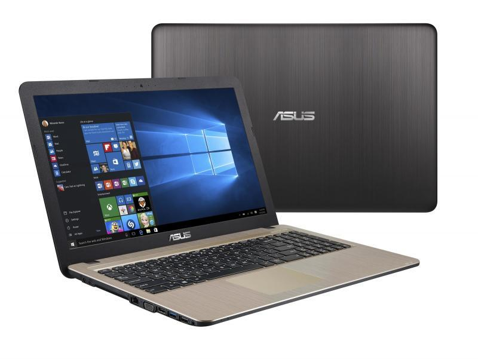
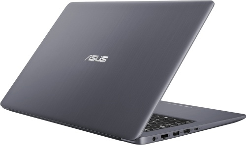

Новый ноутбук является отличным решением для работы, учебы и путешествий. Вполне себе ударопрочный корпус, а также пылезащищенный корпус позволит работать на нем практически в любых условиях
Основные характеристики
экран: 15.6"; разрешение экрана: 1366×768; процессор: AMD E1 7010; частота: 1.5 ГГц; память: 2048 Мб, DDR3; HDD: 500 Гб, 5400 об/мин; AMD Radeon R2; WiFi; Bluetooth; HDMI; WEB-камера; Free DOS
С диском с объемом в 500 гигабайт памяти не возникнет проблем с нехваткой памяти. Экран на 15.6 дюймов позволит наблюдать отличное качество картинки. Процессор AMD E1 7010 с частотой 1.5 гигагерц не заставит вас ждать загрузки вашей программы. В данном ноутбуке также находятся встроенные адаптеры wifi и bluetooch.
В данный момент цена ноутбука ASUS VivoBook X540YA-XO047D составляет 17 790 рублей плюс вам могут быть зачислены бонусы на последующую оплату в нашем интернет магазине.
Рассмотрим данную модель ноутбука под прицелом
С ASUS VivoBook X540YA-XO047D можно с комфортом трудиться, развлекаться и учиться. Мощное железо позволяет комфортно работать в нескольких окнах одновременно, а также обеспечивает высокую производительность на ультранастройках в онлайн-играх.
высокие технологии
В данной модели были использованы самые современные и последние достижения техники. Качество комплектующих может только радовать любого пользователя.
При длительном использовании ноутбука для защиты глаз была использована технология life, позволяющая в течении долгого времени находится за любимым устройством.
Батарея с возможностью интенсивной работы на протяжении 7-ми часов просто необходима для такого ноутбука при всей его мощи.
При просмотре фильмов очень порадует технология gir которая позволяет отображать картинку на экране в естественных цветах.
мощь
С таким процессором как AMD E1 7010 с частотой 1.5 все ваши программы будут запускаться в один клик не заставляя вас ждать лишней секунды.
Еще раз обратим внимание на материалы использованные при изготовлении данного ноутбука:
Лаконичный корпус модели выполненный из долговечных материалов – алюминия и пластика первое на что обратит свое внимание пользователь ASUS VivoBook X540YA-XO047D.
удобство
Компактные габариты 27х342х262 мм и вес 3 кг позволят без проблем взять его с собой на работу, учёбу или в путешествие.
скачать word